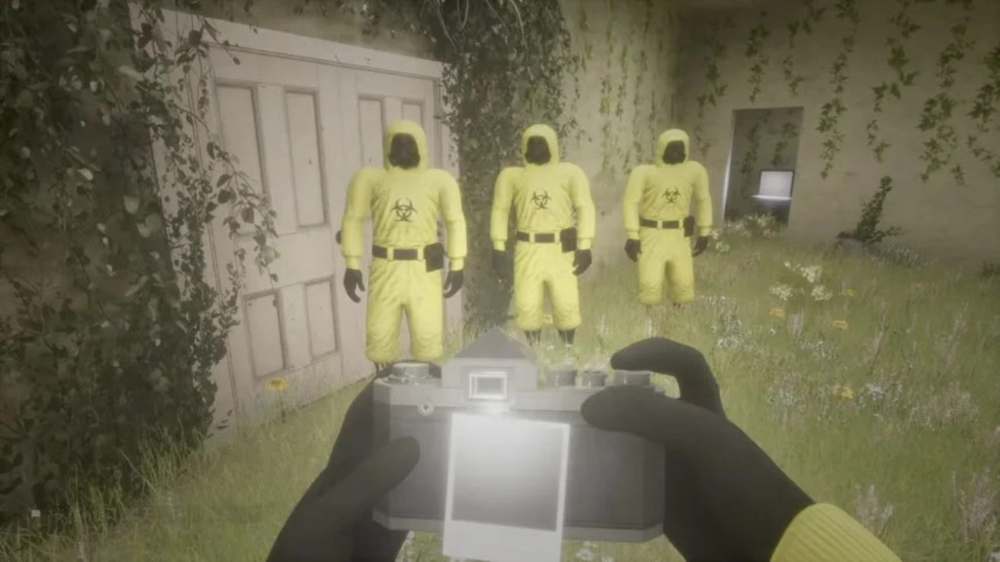
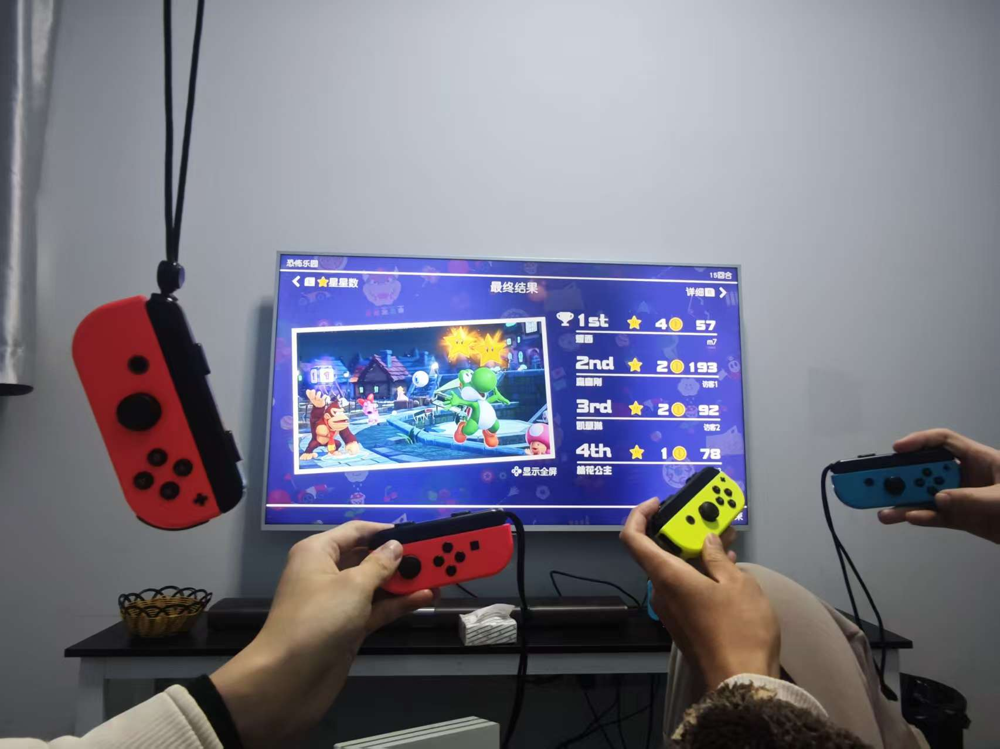
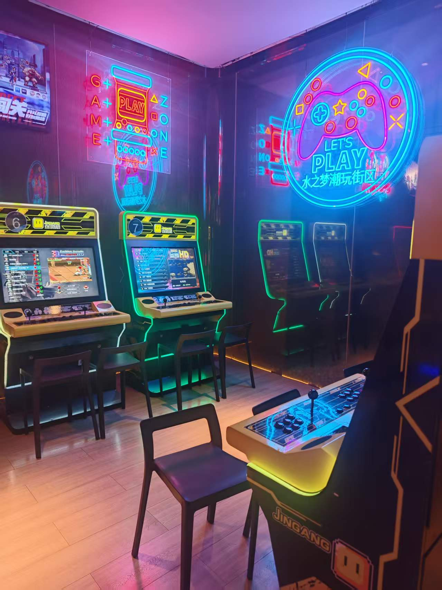
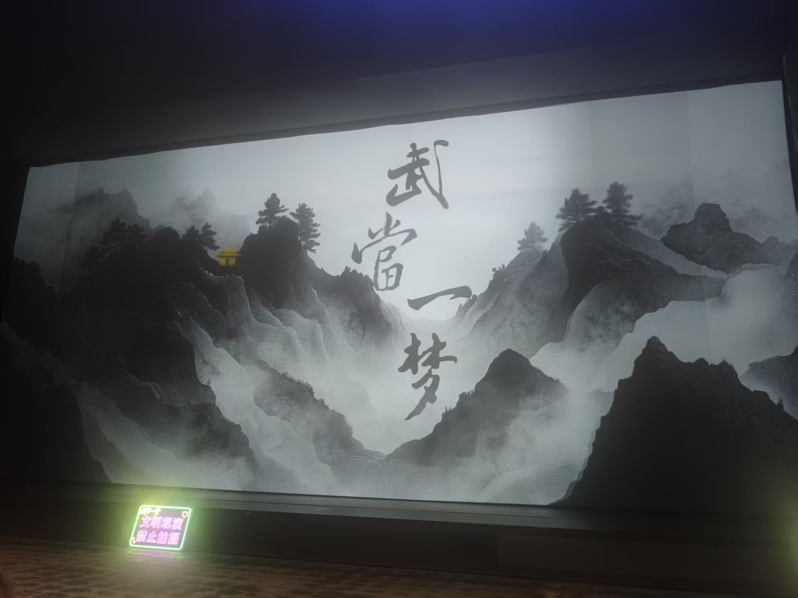
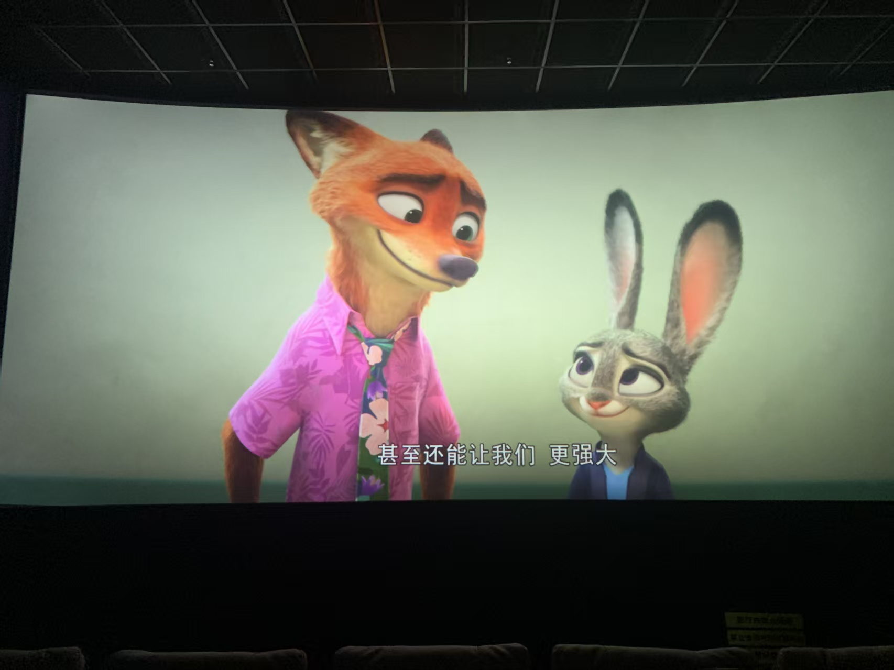
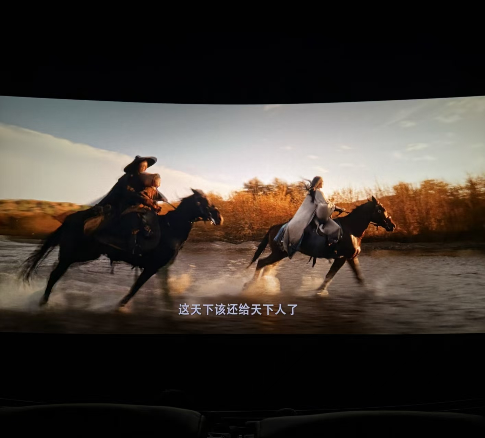

生活不止学习，探索更多精彩



我对游戏有着浓厚的兴趣，尤其偏爱策略类和竞技类游戏。在策略游戏中，我喜欢通过分析局势、制定战术来取得胜利，这锻炼了我的逻辑思维和全局规划能力；在竞技游戏中，我则享受团队配合与快速反应带来的挑战，也在和队友的配合中提升了自己的沟通与协作意识。游戏不仅是我放松解压的方式，也让我学会了如何在压力下保持冷静、如何在团队中发挥自己的价值。
热爱探索不同城市的风景与文化，无论是城市漫步、山野徒步还是小众景点打卡，都能让我感受到不同地域的独特魅力。我喜欢用镜头记录旅途瞬间，无论是日出日落、城市街景还是人文风情，都能成为我镜头里的故事。同时，我也热衷于整理旅行攻略，分享出行经验，从行程规划、预算控制到住宿餐饮推荐，希望能帮助更多大学生实现低成本高质量的旅行体验。



喜欢在不同风格的音乐中寻找情绪共鸣，无论是舒缓的纯音乐还是节奏感强烈的流行乐，都能让我在学习和工作中快速调整状态。同时，我也是一名电影爱好者，尤其偏爱剧情片、纪录片和现实题材作品，这些作品不仅能带来感官享受，更能让我从不同视角理解生活与社会，拓宽自己的认知边界。